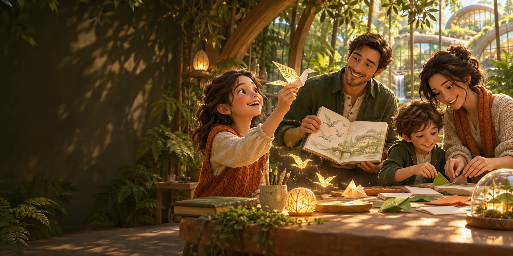
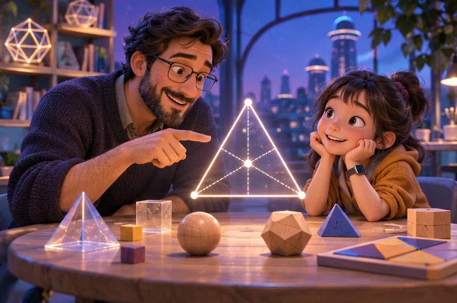
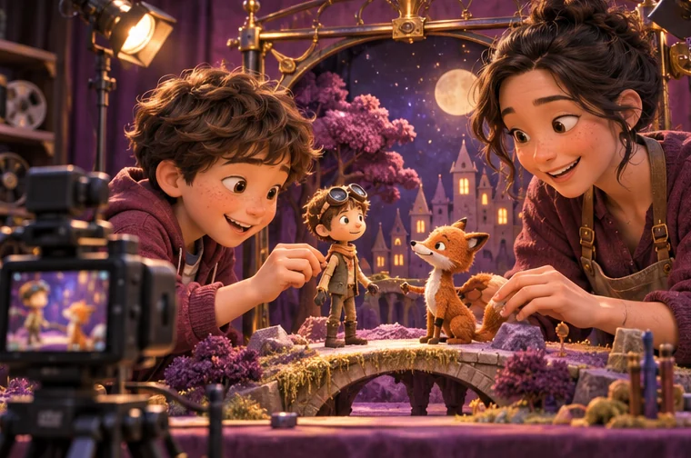
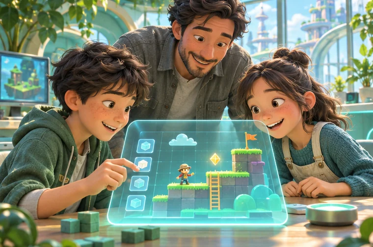
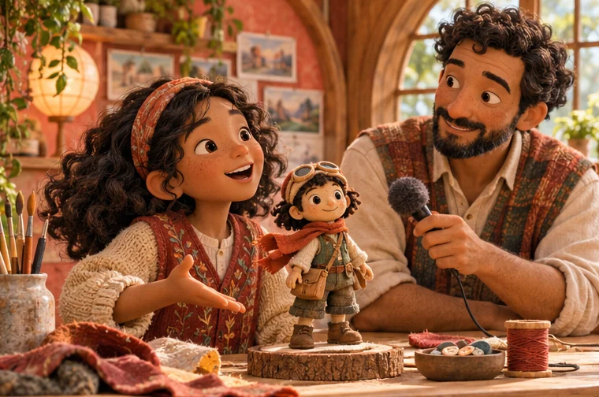
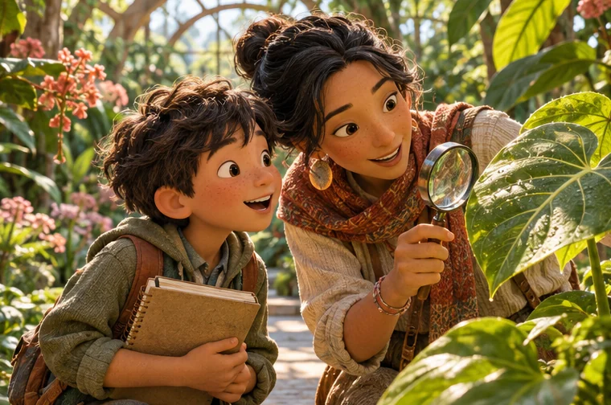
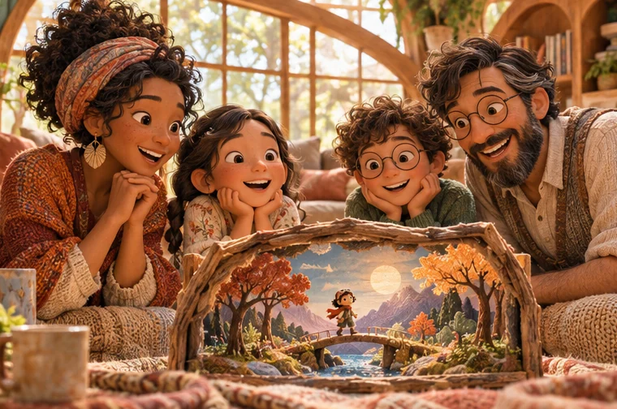
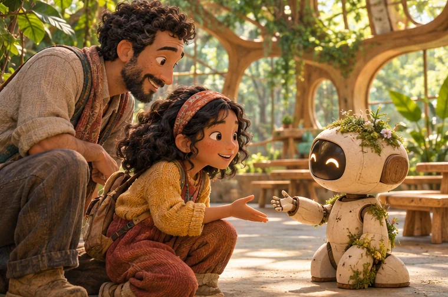

Понимать, а не копировать
Разбираемся, почему получился такой ответ и как его улучшить. Учимся объяснять собственные решения.

Нейросети и AI-агенты для детей и родителей
Снимите свой мультфильм, соберите игру или придумайте AI-репетитора. Начните с проекта, который увлечёт всю семью.
Выбрать лабораториюВыберите, что интересно вашей семье. Откройте лабораторию, чтобы увидеть, чему вы научитесь и какой проект сможете сделать вместе.
 Художник и дизайнерТворческая
Художник и дизайнерТворческаяИщем визуальный язык, превращаем рисунок или идею в изображение, создаём узнаваемых героев и оформление.
Вместе создаём: иллюстрированную книгу или комикс о приключении семьи.
Примеряем роли: художник, дизайнер, автор.

Свой AI-репетиторУчебнаяУчимся создавать агента, который объясняет с учётом уровня, задаёт вопросы, даёт подсказки и помогает увидеть пробелы.
Вместе создаём: репетитора по математике, языку, истории или другому предмету и план занятий с ним.
Ребёнок пробует учиться с агентом. Родитель помогает проверить объяснения и настроить поддержку.
Попробовать настройку репетитора
Режиссёр и монтажёрКино иПридумываем сюжет, планируем сцены и собираем историю из нейровидео, собственных съёмок, голосов и музыки.
Вместе создаём: короткий фильм, мультфильм или семейный видеодневник.
Примеряем роли: режиссёр, сценарист, актёр, монтажёр.

Разработчик и тестировщикЦифроваяОписываем задачу агенту-разработчику, собираем прототип и проверяем его всей семьёй.
Вместе создаём: сайт об увлечении, викторину, планер или полезное приложение.
Примеряем роли: разработчик, дизайнер интерфейсов, тестировщик.

Блогер и ведущийМедиа иУчимся рассказывать о своих интересах, говорить в кадре, снимать и монтировать. Исследуем, как устроены публикации и общение в соцсетях.
Вместе создаём: семейный медиапроект — серию роликов, интервью или подкаст.
Примеряем роли: блогер, ведущий, редактор, продюсер. Решение о публикации принимает взрослый с учётом правил площадки.

Исследователь и журналистСемейныеВыбираем вопрос, ищем источники, сравниваем версии и представляем находки. Учимся отличать подтверждённые факты от предположений.
Вместе создаём: цифровой путеводитель, мини-музей увлечений или историю семейного открытия.
Примеряем роли: исследователь, журналист, экскурсовод.

Например, за выходные можно придумать историю о бумажной птице и собрать из неё короткий мультфильм.
Учебная лаборатория · попробуйте идею
Создание агента начинается с понятной инструкции. Выберите предмет и способ объяснения — получится пример задания для вашего AI-репетитора.
Ты мой учебный помощник по предмету «Математика». Я начинаю с основ. Сначала уточни тему и проверь, что я уже понимаю. Давай подсказки по шагам. Помоги мне самому прийти к решению. Если я ошибусь, объясни причину и предложи похожую задачу. Проверяй ход рассуждений, признавай неопределённость и не выдумывай факты.
Это конструктор инструкции. Самого агента учимся создавать и проверять в учебной лаборатории.
Три идеи, с которых можно начать семейный проект.
От рисунка или фотографии — к персонажу, сценарию и короткому мультфильму с собственным голосом и настроением.
Новый уровень: AI-агенты
Вы задаёте направление.
Агенты помогают пройти путь.
Решения остаются за вами.

Поверни помощника · мышью или пальцемПомогает превратить «хочу мультик про космос» в понятную историю: герои, события, диалоги и план сцен.
«Помоги придумать историю о девочке, которая учит робота дружить. Предложи три разных финала».
Учимся давать роли и инструкции, делить задачу на шаги, проверять ответы и улучшать результат.
12 модулей для детей и родителей. От изображений, озвучки и мультфильмов до собственных AI-агентов, сайтов и приложений.
Читать образовательную программуВажнее любой технологии
Разбираемся, почему получился такой ответ и как его улучшить. Учимся объяснять собственные решения.
Берём идеи из жизни семьи: любимые истории, увлечения и задачи, которые хочется решить.
Обсуждаем личные данные, права на изображения и чужой голос. Аккаунты и условия сервисов — под контролем взрослых.
Родителям
Для первых творческих проектов можно начать с обычного текста. В разработке будем учиться объяснять задачу агенту, читать результат и проверять поведение сайта или приложения.
Да, семейный формат — центральная идея «НейроДетей». Можно придумывать вместе, распределять роли и помогать друг другу. Уровень участия обсудим перед началом обучения.
Условия обновлённой семейной программы формируются. Напиши Юлии: обсудим возраст ребёнка, интересы, подготовку и подходящий формат. Стоимость и условия сообщим до записи.
Интернет и доступ к выбранным нейросетям. Для создания сайтов и приложений удобнее компьютер. Некоторые сервисы могут требовать отдельную оплату и иметь возрастные ограничения — список инструментов и расходов согласуем заранее со взрослым.
Да. Базовое описание курса опубликовано в Telegram-канале «НейроДети». Программа на этом сайте расширяет эту основу работой с агентами и цифровыми проектами.
Расскажите Юлии, чем увлекается ваш ребёнок. Вместе подберём подходящий проект.
Написать Юлии в Telegram